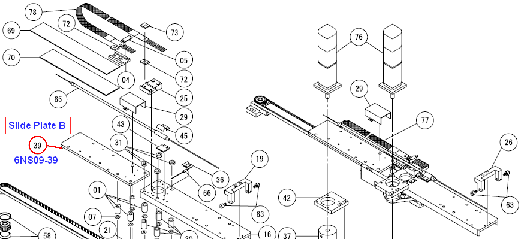

Service History
Subject: Device drop at Index Arms and device pickup error at Output Shuttle 1
Handler Model: NS-6040 (S/N: 15456)
Controller: RC520
Date: 15 Jul 2009
Symptom
Fine tuning for Hot Jam Rate at 130 Deg C
1. Encountered device drop error at Index arm 1 and 2.
2. Encountered device pickup error at Output shuttle 1.
Action
1. Encountered device drop error at Index arm 1 and 2.
- fine tuning of counter air.
2. Encountered device pickup error at Output shuttle 1.
- removed and cleaned Input/Output hand buffer units (Qty:04)
- fine tuning Input/Output Z hands because the Z hands were too low.
- found Slide Plate B bent, 6NS09-39.

Cause
Remarks